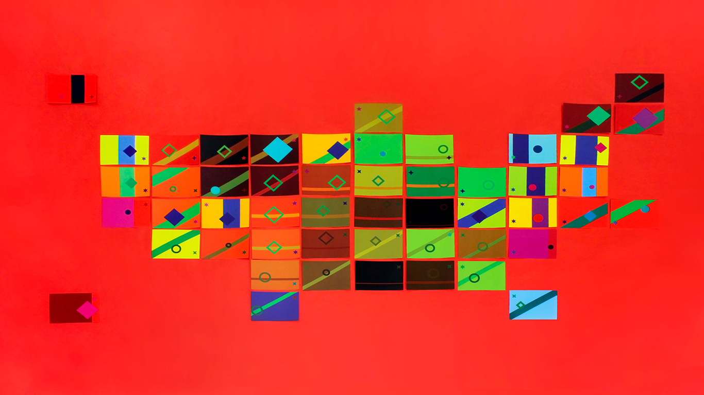
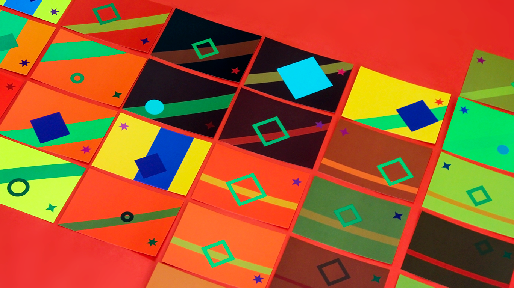
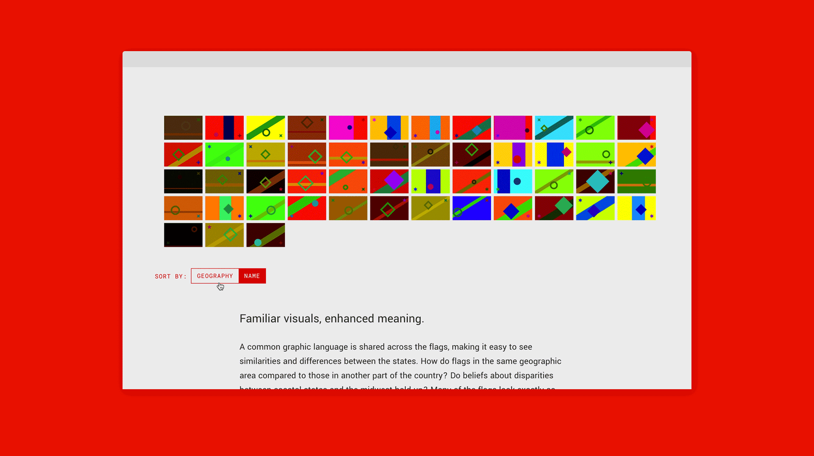
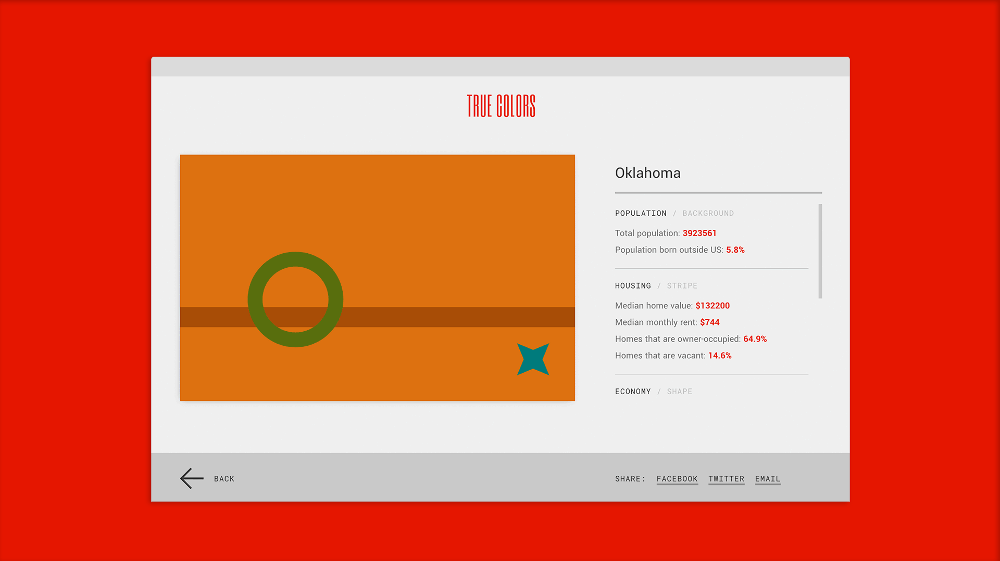
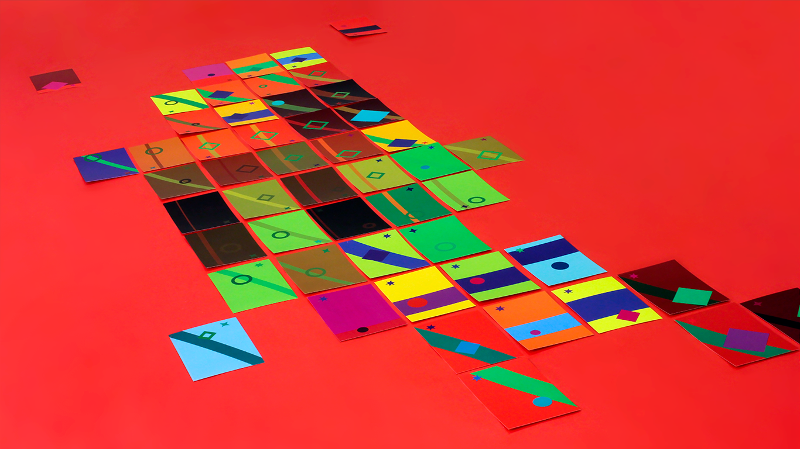
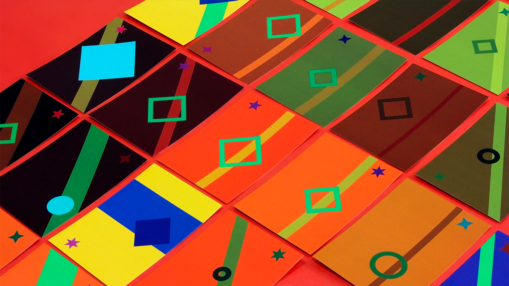
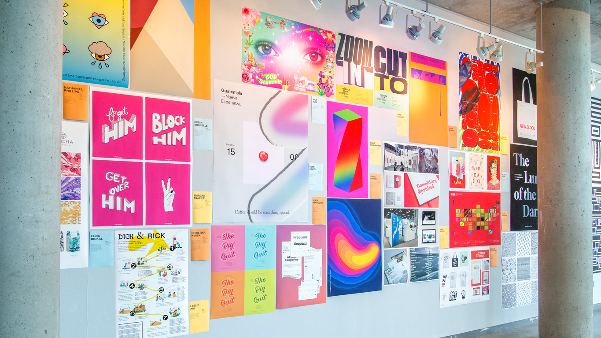
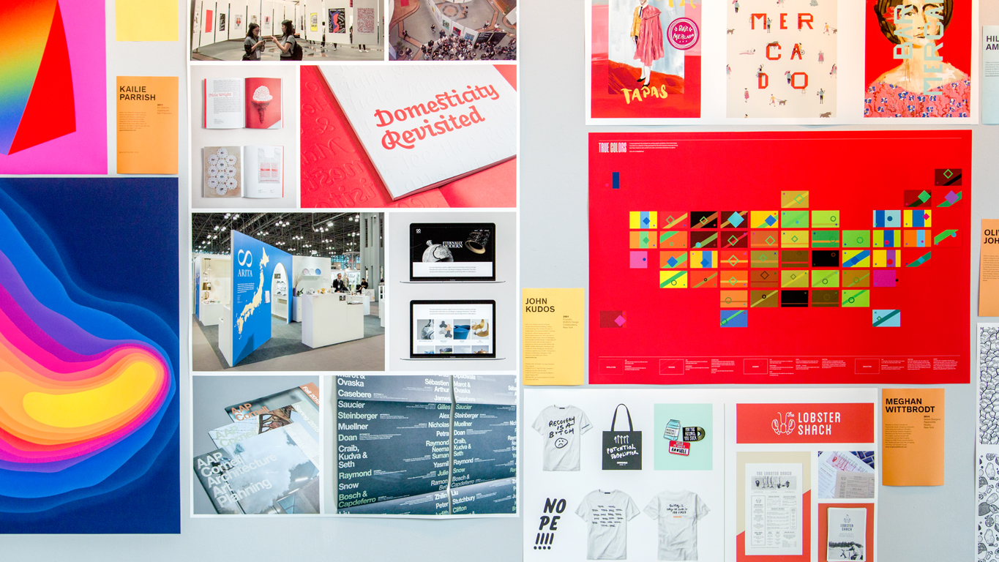

What would the United States flags look like if they were based on data?
A visual experiment that evaluates the evolving graphic symbolism of the United States, True Colors is a collection of flags generated from the most recent American Community Survey. Each flag is based on data specific to its state, and provides information at a glance. The full project can be viewed at truecolors.us.


Familiar visuals, enhanced meaning
The design of each flag is derived from common visual cues historically found in flags: stripes, circles or polygons, and stars. The position, color, size, and shape of these cues are determined by the state’s data. Each layer of the flag corresponds to subjects that provide an informative snapshot of life in that state. The background visualizes population, the stripe shows housing, the circle or polygon represents economics, and the star indicates education.


Reflecting the present and future of the US.
The graphic language that is shared across the flags makes it easy to see similarities and differences between the states. How do flags in the same geographic area compared to those in another part of the country? Do beliefs about disparities between coastal states and the midwest hold up? Many of the flags look exactly as you'd expect, but some may come as a surprise.
The flags you see currently won’t always be representative of the United States. The country is always evolving, and what’s relevant this year will probably be drastically different a decade from now. If a state changes over time, shouldn’t its flag? As new data is released, the flags can be updated to ensure they always provide an accurate portrayal of the state they stand for.


Project impact
In the fall of 218, True Colors was featured in MICA Graphic Design's Alumni Invitational, alongside other prominent designers including Oliver Munday, Luke Williams, and Aron Fay.
The design blog Brand New featured True Colors following the project's initial launch in February, 2018.

